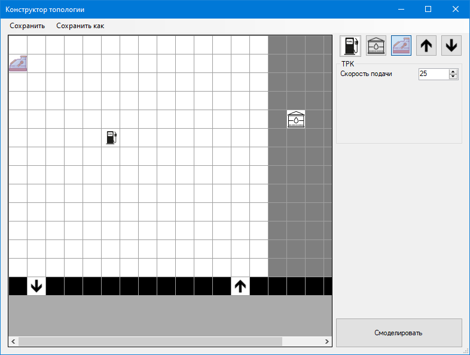
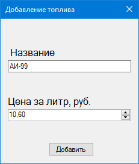
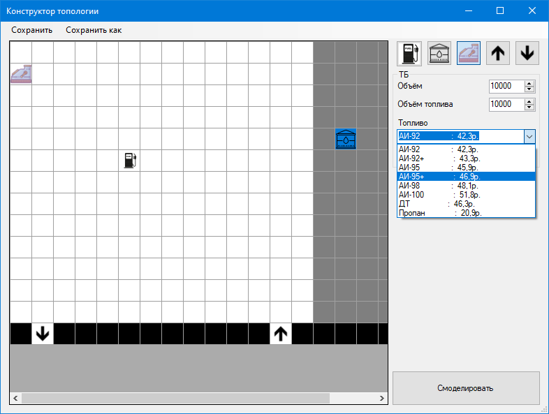

После того как была создана и настроена или загружена из файла топология, система отобразит экранную форму «Конструктор топологии», изображенную на рисунке 1, в котором пользователь может выполнять различные действия: размещать ШЭ, удалять ШЭ, настраивать ШЭ.

Рисунок
1 – Экранная форма «Конструктор топологии»
В левом верхнем углу располагаются кнопки «Сохранить», «Сохранить как», «Справка» и «О разработчиках». С помощью кнопок «Сохранить» и «Сохранить как» пользователь может сохранить топологию в файл, в котором осуществляется работа или же сохранить топологию в новый файл.
Нажав на кнопки «Справка» и «О разработчика», пользователь может посмотреть информацию о конструкторе и разработчиках соответственно.
В правом верхнем углу расположена панель ШЭ (ТРК, ТБ, касса, въезд, выезд). Под этой панелью располагается окно, в котором отображается информация о выбранном ШЭ, где пользователь может настроить параметры ШЭ.
Большая часть экрана отображает пространство, в котором расположено сама топология и расположенные на ней ШЭ. Чтобы добавить ШЭ на топологию, пользователь должен выбрать ШЭ и, кликая ЛКМ, размещать ШЭ. Пользователь может размещать ШЭ с помощью функции «Drag and drop». Чтобы удалить ШЭ с топологии, пользователь должен кликнуть правой кнопкой мыши (ПКМ) по ШЭ, который он хочет удалить.
Чтобы настроить ШЭ «ТРК», пользователь должен кликнуть ЛКМ по ТРК на топологии, после чего станет доступным параметр выбранной ТРК, а именно параметр «Скорость подачи». В данном поле пользователь может указать любое число. Если ведённое значение выходит за пределы допустимых значений, то присвоено будет минимальное или максимальное значение соответственно. На рисунке 2 изображена область, в которой происходит настройка ТРК.

Рисунок
2 – Настройка ТРК
Чтобы настроить ШЭ «ТБ», пользователь должен кликнуть ЛКМ по ТБ на топологии, после чего станут доступны такие параметры как «Объем» и «Объем топлива» и «Топливо». На рисунке 3 изображена настройка параметров ТБ.

Рисунок
3 – Настройка ТБ
В поле «Объем» пользователь указывает размер ТБ. В поле «Объем топлива» пользователь указывать объем выбранного топлива в ТБ. В поле «Топливо» пользователь указывает какой вид топлива будет находиться в выбранном ТБ. Для того чтобы выбрать топливо, пользователю необходимо открыть список видов топлива, кликнув ЛКМ по стрелке в конце поля. После этого откроется список доступных видом топлива, где он может выбрать нужный ему вид топлива.
Если пользователь захочет создать новый вид топлива, то он кликает на гиперссылку «Добавить топливо». После нажатия на эту кнопку, откроется модальное окно «Добавление топлива». В данном поле пользователю необходимо заполнить поля «Название» и «Цена за литр, руб». После успешного заполнения соответствующих полей, создается новый вид топлива и выбранный ТБ выбирает новое топливо в качестве параметров. На рисунке 4 изображена экранная форма «Добавление топлива».
Рисунок
4 – Экранная форма «Добавление топлива»
ШЭ «касса», «въезд» и «выезд» не имеют настраиваемых параметров.
При нажатии на кнопку «Смоделировать» система выполняет валидацию. Если валидация пройдет успешно, то осуществится переход к экранной форме «Настройка транспортного потока», иначе система выдаст сообщение об ошибке с указанием ее причины.